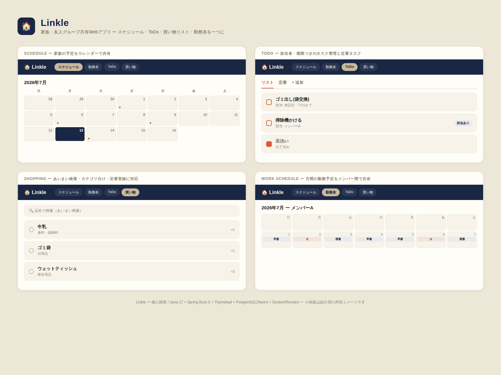

公開中About
自己紹介
学び続けるエンジニアとして
IT分野に強い関心を持ち、JavaやPythonを中心にプログラミングやWeb技術を学習しています。
AI技術も活用しながら、実践的なスキルの習得と継続的な成長を目指しています。
Java
Python
JavaScript
AI
Web
Database
Career
実務経歴
金融系SIerでの開発経験
金融系SIerで約5年間、システム開発に携わってきました。基幹系（COBOL）とWeb系（Java）の両方を経験し、開発工程だけでなく、サブシステム担当としてのメンバー・協力会社との調整業務まで幅広く担当。近年は生成AIなどのAI技術も開発業務に取り入れ、コーディングや開発効率化にも取り組んでいます。
勘定系グループ（1〜3年目）
COBOLを用いた基幹系システムの設計・開発・テストを担当。サブシステム担当として、後輩社員や協力会社への作業指示・進捗確認なども経験。
情報系グループ（4年目〜現在）
ローコード開発に加え、Javaを用いたWebアプリケーション開発を担当。生成AIなどのAI技術を開発業務に活用し、コーディングや開発効率化にも取り組む。
| 分野 | 経験 | アピール度 |
|---|---|---|
| COBOL | 1〜3年目に開発 | ★★★★☆ |
| Java | 4〜5年目に開発 | ★★★★☆ |
| ローコード開発 | 4〜5年目 | ★★★☆☆ |
| AI活用開発 | 4〜5年目 | ★★★☆☆ |
| 金融系システム | 約5年 | ★★★★★ |
| サブシステム担当 | 1〜3年目 | ★★★★★ |
| 後輩・協力会社の管理 | 1〜3年目 | ★★★★★ |
| 開発経験 | 約5年 | ★★★★★ |
| 上流・調整経験 | SIer業務として経験 | ★★★★☆ |
基幹系とWeb系の両方を経験
COBOLによる金融系基幹システム開発と、JavaによるWebアプリケーション開発の両方の経験があります。
開発工程を幅広く経験
設計・開発・テストに加え、サブシステム担当としての業務も経験しています。
メンバー・協力会社との調整経験
後輩社員や協力会社への作業指示、進捗確認などを担当してきました。
AIを活用した開発
生成AIなどを開発業務に取り入れ、コーディングや開発効率化に取り組んでいます。
今後の方向性
SIerとして培った経験を土台に、Java・Web開発の技術力をさらに高め、設計・実装・テストといった開発業務により深く携わるエンジニアを目指しています。
Skills
ITスキル
経験のある言語・ツール
プログラミング言語
Java
Python
COBOL
フロントエンド
HTML/CSS
JavaScript
データベース
PostgreSQL
MySQL
開発ツール（ローコード）
WebPerFormer
Process
経験のある開発工程
担当した工程と経験レベル
| 工程 | 内容 | 経験度 |
|---|---|---|
| 要件定義 | 顧客ヒアリング、要件定義書作成等 | ★★★☆☆ |
| 基本設計 | 画面設計、機能設計、ジョブネット設計 | ★★★★☆ |
| 詳細設計 | クラス設計、DBテーブル設計等 | ★★★★☆ |
| 製造 | Javaやローコードツールを用いた開発 | ★★★★★ |
| 単体試験 | テストケース作成、試験実施、品質確認 | ★★★★☆ |
| 結合・総合試験 | 連携動作確認、障害調査、改修対応 | ★★★☆☆ |
| 本番リリース作業 | リリース準備、品質評価、本番確認 | ★★★★☆ |
Personal Projects
個人開発プロジェクト
企画から実装まで一貫して開発しているシステム
日常生活を便利にするツール
Licenses
取得資格
学習の軌跡
第二種電気工事士
電気設備工事に必要な基礎技能と知識。
Microsoft Office Specialist（Excel・Word）
Officeツールの基礎〜応用操作を体系的に習得。
Python3エンジニア認定基礎試験
Pythonの基本文法・標準ライブラリの理解。
情報セキュリティマネジメント試験
情報セキュリティの基礎理論と実務知識。
基本情報技術者試験
IT全般の基礎知識とアルゴリズム・設計の理解。
Hobby
趣味・特技
インプットとリフレッシュ
読書
ミステリー小説が好き（綾辻行人、知念実希人など）。
サッカー観戦
海外サッカーが好き。推し選手はクヴァラツヘリア。
映画鑑賞
洋画が好き。「ロード・オブ・ザ・リング」がお気に入り。
ソフトテニス
中学〜高校の6年間、部活動に所属。ダブルスでは前衛を担当。
Get in touch
連絡先
ご連絡・リンク